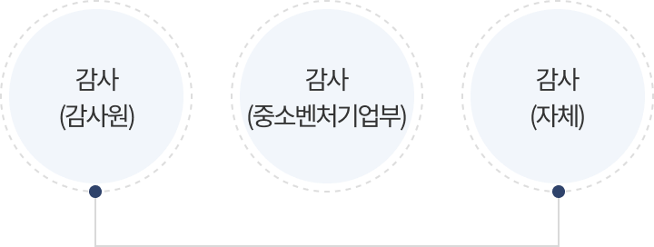
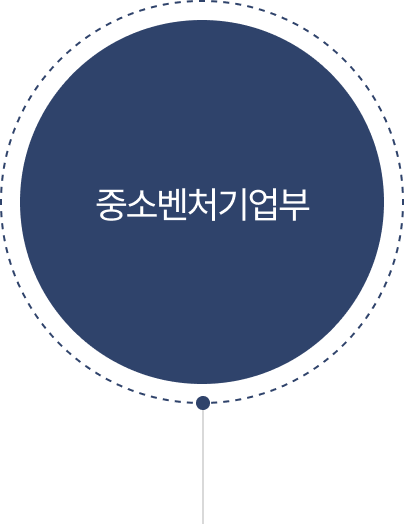
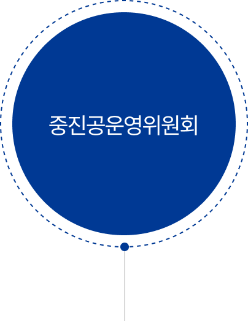
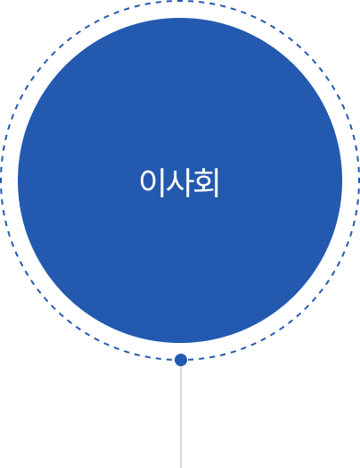

의사결정 및 감독체계


의사결정 및 감독체계
기금운용계획 수립 절차
STEP 01
중장기 재정
운용계확(안) 수립
- 감독기관인 중소벤처기업부과 협의 후, 기획재정부 제출 (매월 1월말)
STEP 02
차기년도
기금운용 계획(안) 수립
- 중소벤처기업부, 기획재정부와 협의 후 차기년도 기금운용 계획 수립
- 이사회 → 운영위원회 승인 후 정부 제출(5월말)
STEP 03
기금운용계획(안)
정부 확정
- 기획재정부 심의 후 정부(안)마련 → 국무회의재가 → 대통령결제 → 국회송부 (매년 9.2)/li>
STEP 04
기금운용계획(안)
국회 확정
- 국회의 기금운용계획(안) 검토, 조정, 확정(매년 12.2)
STEP 05
기금운용계획 보고
- 국회 확정 → 기금운용계획 중소벤처기업부 보고
감독체계
- 중소벤처기업진흥공단의 사업집행 등 업무수행에 대하여 감사실에서 정기 및 수시감사를 실시하고 있으며 대외적으로는 매년 중소벤처기업부 및 감사원의 감사와 국회의 국정감사를 받고 있음
- 중소벤처기업진흥공단의 업무에 대하여 중소벤처기업부 장관의 지도ㆍ감독을 받으며 필요시 사업에 관하여 중소벤처기업부 장관의 지시 또는 명령을 받고 있음
- 중진공의 업무ㆍ회계 및 재산에 대하여 중소벤처기업부 장관에게 보고
중진 기금의 관리 및 감독 체계


- 행정감사

- 중진공의 모든 업무에 대한 관리감독 권한

- 기금의 예산 결산 심의 의결
- 이사회에서 부의한 중진공 운영에 중요한 사항에 대한 최종 의결

- 중진공 운영의 중요사항 의결